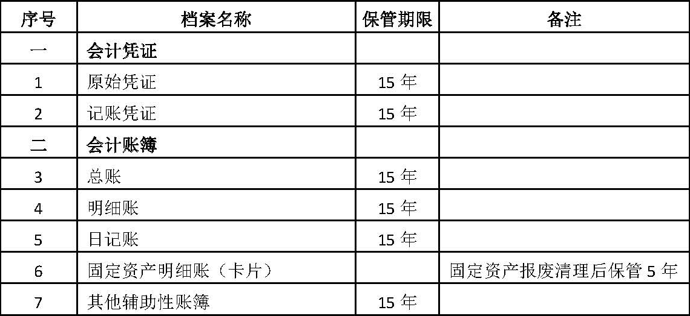
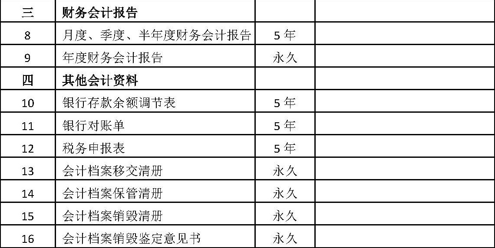
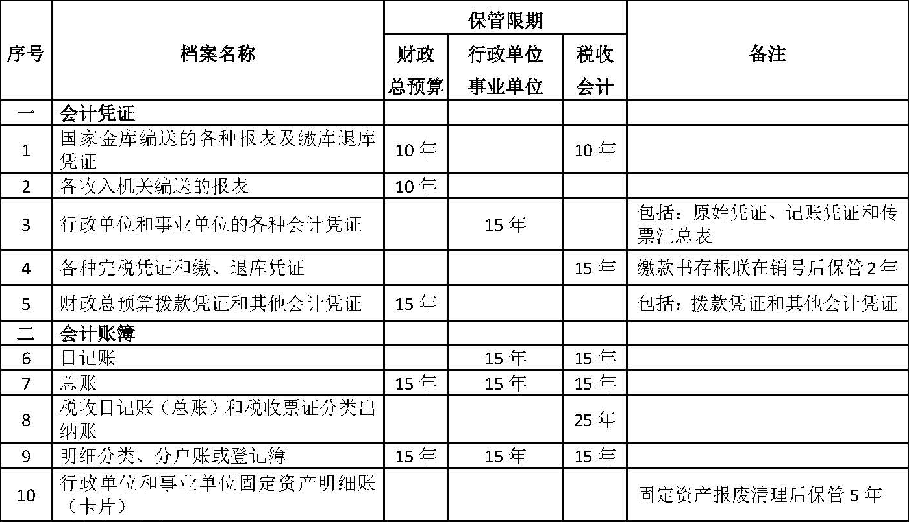
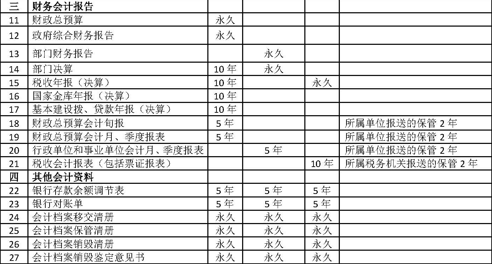

|
资料名称：会计档案管理办法（征求意见稿）
|
| 手机阅读请扫我 |
|
会计档案管理办法（征求意见稿） 第一条 为了加强会计档案管理，有效保护和利用会计档案，根据《中华人民共和国会计法》、《中华人民共和国档案法》等有关法律、行政法规，制定本办法。 第二条 国家机关、社会团体、企业、事业单位和其他组织（以下统称单位），应当依照本办法管理会计档案。 第三条 国务院财政部门和国家档案行政管理部门主管全国会计档案工作，共同制定全国统一的会计档案工作制度，对全国会计档案工作实行监督和指导。
第四条 各单位应当加强会计档案管理工作，设立档案机构或配备档案工作人员，建立和完善会计档案的收集、整理、保管、利用和鉴定销毁等管理制度，采取可靠的安全防护技术和措施，保证会计档案的真实、完整、可用、安全。 第五条 本办法所称会计档案是指各单位在进行会计核算过程中接收或形成的，记录和反映单位经济业务事项的，具有保存价值的文字、图表等各种形式的会计资料。
第六条 单位可以利用计算机、网络通信等现代信息技术手段管理会计档案。 第七条 单位内部形成的电子会计资料，同时满足下列条件的，可仅以电子形式归档保存：
第八条 单位从外部接收的原始凭证，附有符合《中华人民共和国电子签名法》规定的第三方认证的电子签名，且同时满足第七条规定条件的，可仅以电子形式归档保存。 第九条 单位会计机构按照归档范围和归档要求，负责定期将应当归档的会计资料整理立卷，编制会计档案保管清册。 第十条 属于当年归档范围的会计资料，一般应当在会计年度终了后半年内，由单位会计机构向档案机构或档案工作人员进行移交。
第十一条 单位会计机构在办理会计档案移交时，应当编制会计档案移交清册，并按国家有关规定办理移交手续。
第十二条 各单位应当严格按照有关制度利用会计档案。利用会计档案的过程中，严禁篡改和损坏会计档案。
第十三条 会计档案的保管期限分为永久、定期两类。定期保管期限分为5年、10年、15年、25年四类。
第十四条 本办法规定的会计档案保管期限为最低保管期限，各类会计档案的保管原则上应当按照本办法附表所列期限执行。
第十五条 各单位应当成立档案鉴定委员会（或小组），定期对已到保管期限的会计档案进行鉴定，并形成会计档案鉴定销毁意见书。经鉴定，仍需继续保存的会计档案，应重新划定保管期限；对保管期满，确无保存价值的会计档案，可以进行销毁。 第十六条 单位确定可以销毁的会计档案，应当按照以下程序进行销毁：
第十七条 保管期满但未结清的债权债务会计凭证和涉及其他未了事项的会计凭证不得销毁，纸质会计档案应当单独抽出立卷，电子会计档案单独转存，保管到未了事项完结时为止。单独抽出立卷或转存的会计档案，应当在会计档案销毁清册和会计档案保管清册中列明。 第十八条 单位因撤销、解散、破产或其他原因而终止的，在终止和办理注销登记手续之前形成的会计档案，应当按照国家有关规定处置。 第十九条 单位分立后原单位存续的，其会计档案应当由分立后的存续方统一保管，其他方可查阅、复制与其业务相关的会计档案；单位分立后原单位解散的，其会计档案应当经各方协商后由其中一方代管或按照国家有关规定处置，各方可查阅、复制与其业务相关的会计档案。单位分立中未结清的会计事项所涉及的会计凭证，应当单独抽出由业务相关方保存，并按规定办理交接手续。
第二十条 单位合并后原各单位解散或一方存续其他方解散的，原各单位的会计档案应当由合并后的单位统一保管。单位合并后原各单位仍存续的，其会计档案仍应当由原各单位保管。 第二十一条 建设单位在项目建设期间形成的会计档案，应当在办理竣工决算后移交给建设项目的接受单位，并按规定办理交接手续。 第二十二条 单位之间交接会计档案时，交接双方应当办理会计档案交接手续。
第二十三条 关系国家安全的会计档案，未经有关业务主管部门及国家保密主管部门批准，不得以任何形式将其携带、寄运或传输至境外。 第二十四条 预算、计划、制度、审计等文件材料，应当执行文书档案管理规定，不适用本办法。 第二十五条 各省、自治区、直辖市人民政府财政部门、档案行政管理部门，国务院各业务主管部门，中国人民解放军总后勤部，可以根据本办法制定具体实施办法。 第二十六条 单位委托中介机构代理记账的，应当在签订的书面委托合同中，明确会计档案的保管要求及相应责任。 第二十七条 驻外机构和境内单位在境外设立企业的会计档案应当按照本办法和国家有关规定进行管理。 第二十八条 本办法由财政部负责解释，自2015年7月1日起执行。1998年8月21日财政部、国家档案局发布的《会计档案管理办法》自本办法执行之日起废止。 附表1：企业和其他组织会计档案保管期限表   附表2：财政总预算、行政单位、事业单位和税收会计档案保管期限表   注：税务机关的税务经费会计档案保管期限，按行政单位会计档案保管期限规定办理。 （2018.03.03更新） |
|
声明 本资料来源于网络，版权归原作者所有，若需引用请注明出处，引用前请与原件进行核对，请勿用于商业用途！ |
|
声明 本资料来源于网络，版权归原作者所有，若需引用请注明出处，引用前请与原件进行核对，请勿用于商业用途！ |
| 分享按钮 |
|
微信扫一扫前往微店 |
|
|
|
|